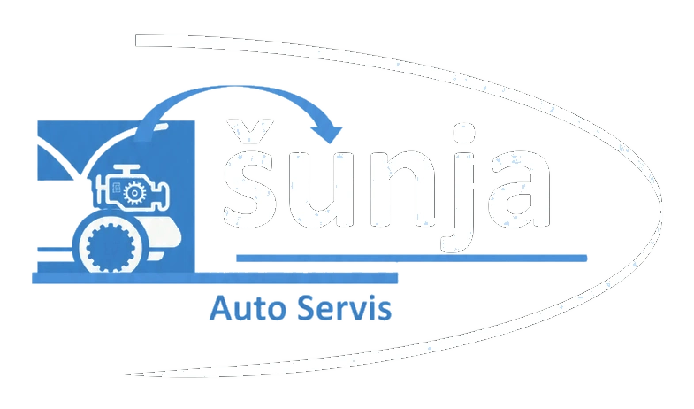

Naše usluge
Autodijagnostika
Dijagnostika i otkrivanje kvarova na vozilu.
- Čitanje i brisanje grešaka
- Provjera svih sistema vozila
- Jasan nalaz prije popravke

PozoviteGoražde, Hajra Lakovića 38
Servis i popravke za sve marke vozila, uz posebno iskustvo s Peugeotom. Dijagnostika, servis, autoelektrika i ključevi, sve na jednom mjestu.
Provjera radnog vremena…
061 297 847Naše usluge
O nama
25+
Auto Servis Šunja · Goražde
O nama
Auto Servis Šunja se nalazi na adresi Hajra Lakovića 38, 73000 Goražde. Bavimo se autodijagnostikom, malim i velikim servisima, autoelektrikom te izradom i programiranjem ključeva i daljinskih upravljača.
Naše usluge
Naše usluge
Dijagnostika i otkrivanje kvarova na vozilu.
Naše usluge
Održavanje i popravke Peugeot vozila.
Naše usluge
Zamjena motornog ulja i filtera.
Naše usluge
Zamjena zupčastog remena i dijelova prema servisnom intervalu.
Naše usluge
Dijagnostika i popravka električnih sistema vozila.
Naše usluge
Izrada i programiranje auto ključeva i daljinskih upravljača.
Galerija
Recenzije
Prosječna ocjena servisa na Google kartama, na osnovu 33 recenzija naših mušterija. Hvala vam na povjerenju!
Pogledajte na Google kartamaLokacija
Svijet
Hajra Lakovića 38, 73000 Goražde, Bosna i Hercegovina.
Nalazimo se na adresi Hajra Lakovića 38. Na karti iznad možete pogledati tačnu lokaciju i isplanirati dolazak.
Upute za vožnjuKontakt
Provjera radnog vremena…
061 297 847